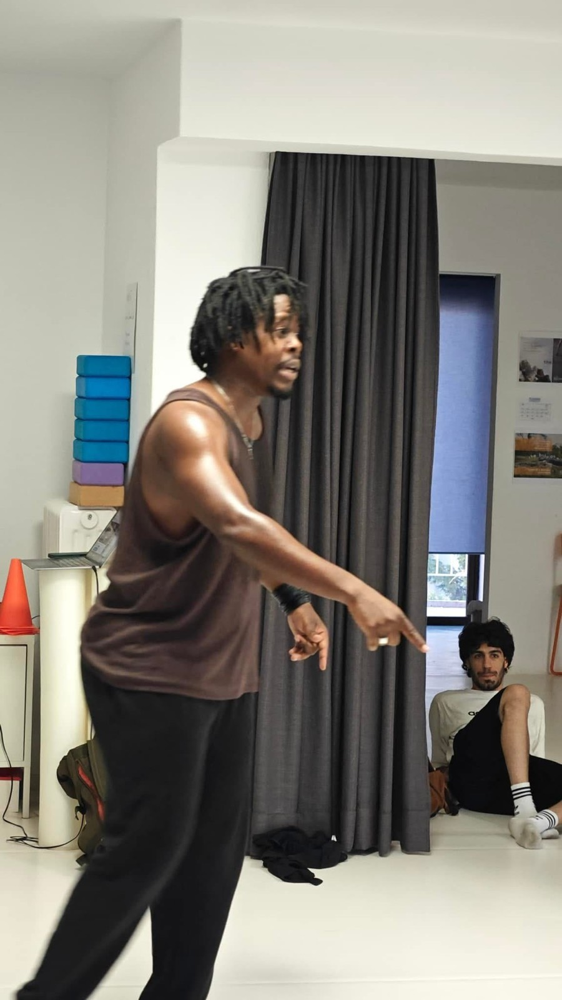

Formation du danseur
NeoFlowAcademy
NeoFlowAcademy est la formation du danseur portée par Regis Tsoumbou bakana : cours, ateliers et masterclass de danse hip-hop et contemporaine, pour transmettre et partager la pratique du mouvement.
« Ma vision de la danse est de transmettre mon savoir au plus grand nombre, de partager mon expérience et de permettre à chacun d'explorer son propre rapport au mouvement. »
Contenu gratuit — Découverte NeoFlowAcademy
La Masterclass du Danseur

Un aperçu gratuit de l'approche NeoFlowAcademy, pensé pour découvrir la méthode et prendre confiance avant d'aller plus loin avec NeoFlow Essentiels.
Qui vous accompagne : danseur professionnel depuis 2008, formé à l'École de Danse Afro-Contemporaine Irène Tassembedo (EDIT) à Ouagadougou — diplômé en 2017 — et titulaire d'une Licence en danse de l'Université Paris 8. Danseur-interprète au sein de plusieurs compagnies en France et à l'international, dont la Compagnie Irène Tassembédo, avec des représentations notamment aux Ballets de Monte-Carlo ; chorégraphe au sein de la Compagnie DK-BEL depuis 2022. Parcours complet sur la page À propos.
Première expérience structurée — NeoFlowAcademy
NeoFlow Essentiels
Confiance
Expression artistique
Création chorégraphique
Carrière professionnelle
Pour les danseurs qui pratiquent régulièrement mais sentent qu'il leur manque une méthode, une direction ou la confiance pour aller plus loin. NeoFlow Essentiels accompagne ce passage : danser avec davantage de confiance, mieux comprendre son mouvement, apprendre à exprimer une intention et commencer à créer sa propre matière chorégraphique.
Contenu gratuit (TikTok / Instagram / YouTube) : connaissance + inspiration + découverte de la méthode
NeoFlow Essentiels : structure + pratique + feedback + progression
NeoFlow Signature : accompagnement personnalisé + projet + professionnalisation
Pour qui : danseurs débutants avancés à intermédiaires, pratiquant régulièrement, qui veulent gagner en confiance, développer leur expression artistique, apprendre à créer et mieux comprendre leur mouvement
Aucun niveau requis au-delà d'une pratique régulière : le programme est pensé pour construire, pas pour trier
Durée : 6 semaines
Rythme : 1 session collective par semaine, 1h30 à 2h
Groupe : volontairement limité à 8–12 danseurs, pour un vrai accompagnement individuel au sein du collectif
Format : en présentiel ou à distance selon les possibilités
Semaine 1 — Se reconnecter à son mouvement : conscience corporelle, présence et confiance
Semaine 2 — Technique & intention : transformer la technique en outil d'expression
Semaine 3 — Expression : interprétation, musicalité, intention et présence
Semaine 4 — Improvisation : faire émerger sa propre matière dansée
Semaine 5 — Création : construire une courte phrase chorégraphique personnelle
Semaine 6 — Identité & trajectoire : présenter son travail, recevoir un retour et définir la prochaine étape
Ce que vous recevez : 6 sessions structurées, des exercices pratiques, des supports de travail, le feedback de Régis, une création personnelle courte, un bilan de progression et une feuille de route pour continuer
À noter : NeoFlow Essentiels est un programme d'accompagnement et de pratique artistique structuré — ce n'est pas une formation diplômante ni une certification professionnelle.
Tarif et prochaines sessions : sur demande
Liste d'attente
Pas encore prêt·e à réserver ? Laissez vos coordonnées par email pour être informé·e des prochaines sessions de NeoFlow Essentiels et de leurs dates.
À venir — NeoFlowAcademy
NeoFlow Signature
Pour les danseurs qui souhaitent aller plus loin dans leur écriture chorégraphique ou leur trajectoire professionnelle, NeoFlow Signature est un accompagnement individuel pensé comme la suite de NeoFlow Essentiels — en visio ou en présentiel selon les possibilités.
Pour qui : danseurs souhaitant approfondir leur écriture chorégraphique ou structurer leur trajectoire professionnelle
Accès : sur candidature, dans la limite de ce que Régis peut réellement accompagner
Page en construction
Le calendrier des prochaines sessions et les tarifs définitifs de NeoFlow Essentiels seront confirmés prochainement.